인간공학기사 (2011-08-21 기출문제)
1과목: 인간공학개론
1. 다음 중 인간공학의 연구 목적과 가장 거리가 먼 것은?
- 인간의 특성에 적합한 기계나 도구의 설계
- 인간의 특성에 맞는 작업환경 및 작업방법의 설계
- 인간오류의 특성을 연구하여 사고를 예방
- 병리학을 연구하여 인간의 질병퇴치에 기여
(정답률: 93%)

2. 다음 중 빛이 단위면적당 어떤 물체의 표면에서 반사 또는 방출되어 나온 양을 의미하는 휘도(brightness)를 나타내는 단위는?
- fL
- cd
- lux
- lumen
(정답률: 42%)
3. 다음 중 정적 인체 측정 자료를 동적 자료로 변환할 때 활용될 수 있는 크로머(Kroemer)의 경험 법칙을 설명한 것으로 틀린 것은?
- 키, 눈, 어깨, 엉덩이 등의 높이는 3% 정도 줄어든다.
- 팔꿈치 높이는 대개 변화가 없지만, 작업 중 5%까지 증가하는 경우가 있다.
- 앉은 무릎높이 또는 오금 높이는 굽 높은 구두를 신지 않는 한 변화가 없다.
- 전방 및 측방 팔길이는 편안한 자세에서 30% 정도 늘어나고, 어깨와 몸통을 심하게 돌리면 20% 정도 감소한다.
(정답률: 81%)
4. 다음과 같은 인간의 정보처리모델에서 구성요소의 위치(A~D)와 해당 용어가 잘못 연결된 것은?
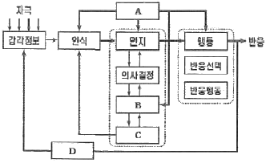
- A - 주의
- B - 작업기억
- C - 단기기억
- D - 피드백
(정답률: 85%)
5. 음압수준이 120dB인 1000Hz 순음의 sone값은 얼마인가?
- 256
- 128
- 64
- 32
(정답률: 71%)
6. 다음 중 직렬시스템과 병렬시스템의 특성에 대한 설명으로 옳은 것은?
- 직렬시스템에서 요소의 개수가 증가하면 시스템의 신뢰도도 증가한다.
- 병렬시스템에서 요수의 개수가 증가하면 시스템의 신뢰도는 감소한다.
- 시스템의 높은 신뢰도를 안정적으로 유지하기 위해서는 병렬시스템으로 설계하여야 한다.
- 일반적으로 병렬시스템으로 구성된 시스템은 직렬 시스템으로 구성된 시스템보다 비용이 감소한다.
(정답률: 91%)
7. 회전운동을 하는 조종장치의 레버를 30° 움직였을 때가 있는 표시장치의 커서는 2cm 이동하였다. 레버의 길이가 10cm일 때 이 조종장치의 C/R비는 약 얼마인가?
- 2.62
- 5.24
- 8.33
- 10.48
(정답률: 66%)
8. 다음 중 시스템의 고장률이 지시함수를 따를 때 이 시스템의 신뢰도를 올바르게 표시한 것은? (단, 고장률은λ, 가동시간은 t, 신뢰도는 R(t)로 표시한다.)
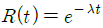
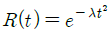
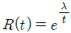
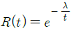
(정답률: 73%)
9. 다음 중 변화감지역(JND)과 웨버(Weber)의 법칙에 관한 설명으로 틀린 것은?
- 물리적 자극을 상대적으로 판단하는데 있어 특정감각의 변화감지역으로 사용되는 표준 자극에 비례한다.
- 동일한 양의 인식(감각)의 증가를 얻기 위해서는 자극을 지수적으로 증가해야 한다.
- 웨버(Weber)비는 분별의 질을 나타내며, 비가 작을수록 분별력이 떨어진다.
- 변화감지역은 동기, 적응, 연습, 피로 등의 요소에 의해서도 좌우된다.
(정답률: 58%)
10. 다음 중 정보이론의 응용과 가장 거리가 먼 것은?
- 자극의 수에 따른 반응시간 설정
- Hick-Hyman 법칙
- Magic number = 7±2
- 주의 집중과 이중 과업
(정답률: 77%)
11. 다음 중 신호검출이론(SDT)에서 신호의 유무를 판별함에 있어 4가지 반응 대안에 해당하지 않는 것은?
- Hit
- Miss
- False alarm
- Acceptation
(정답률: 74%)
12. 다음 중 인간의 나이가 많아짐에 따라 시각 능력이 쇠퇴하여 근시력이 나빠지는 이유로 가장 적절한 것은?
- 수정체의 유연성이 감소하기 때문
- 시신경의 둔화로 동공의 반응이 느려지기 때문
- 세포의 위축으로 인하여 망막에 이상이 발생하기 때문
- 안구 내의 공막이 얇아져 안구내의 영양 공급이 잘되지 않기 때문
(정답률: 73%)
13. 다음 중 효율적인 공간의 배치를 위하여 적용되는 원리와 가장 거리가 먼 것은?
- 사용빈도의 원리
- 중요도의 원리
- 사용순서의 원리
- 작업방법의 원리
(정답률: 79%)
14. 다음 중 전철이나 버스의 손잡이 설치 높이를 결정하는데 가장 적절한 인체측정자료의 응용원칙은?
- 조절식 설계 원칙
- 최대치를 기준으로 한 설계 원칙
- 최소치를 기준으로 한 설계 원칙
- 평균치를 기준으로 한 설계 원칙
(정답률: 73%)
15. 다음 중 인지특성을 고려한 설계원리에 있어 물건에 물리적 또는 의미적인 특성을 부여하여 사용자의 행동에 관한 단서를 제공하는 것을 무엇이라 하는가?
- 양립성
- 제약성
- 행동유도성
- 가시성
(정답률: 63%)
16. 4가지 대안이 일어날 확률이 다음과 같을 때 평균정보량(Bit)은 약 얼마인가?
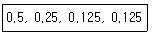
- 1.00
- 1.75
- 2.00
- 2.25
(정답률: 56%)
17. 다음 중 반응시간이 가장 빠른 감각은?
- 청각
- 촉각
- 시각
- 후각
(정답률: 88%)
18. 청각의 특성 중 2개음 사이의 진동수 차이가 얼마 이상이 되면 울림(beat)이 들리지 않고 각각 다른 두개의 음으로 들리는가?
- 33Hz
- 50Hz
- 81Hz
- 101Hz
(정답률: 80%)
19. 다음 중 청각적 표시장치에 관한 설명으로 옳은 것은?
- 청각 신호의 지속시간은 최대 0.3초 이내로 한다.
- 청각 신호의 차원은 세기, 빈도, 지속기간으로 구성된다.
- 즉각적인 행동이 요구될 때에는 청각적 표시장치보다 시각적 표시장치를 사용하는 것이 좋다.
- 신호의 검출도를 높이기 위해서는 소음 세기가 높은 영역의 주파수로 신호의 주파수를 바꾼다.
(정답률: 75%)
20. 다음 중 인간공학에 있어 일반적으로 연구조사에 사용되는 기준의 3가지 요건과 가장 거리가 먼 것은?
- 무오염성
- 변동성
- 적절성
- 기준 척도의 신뢰성
(정답률: 68%)
2과목: 작업생리학
21. 다음 중 근육피로의 일차적 원인으로 축적되는 젖산은 어떤 물질이 변화되어 생성되는 것인가?
- 피루브산
- 락트산
- 글리코겐
- 글루코스
(정답률: 63%)
22. 간장의 주요 척도 중 생리적 긴장의 정도를 측정할 수 있는 화학적 척도가 아닌 것은?
- 혈액 성분
- 혈압
- 산소결손
- 뇨 성분
(정답률: 50%)
23. 다음 중 반사 휘광의 처리 방법으로 적절하지 않은 것은?
- 간접 조명 수준을 높인다.
- 무광택 도료 등을 사용한다.
- 창문에 차양 등을 사용한다.
- 휘광원 주위를 밝게 하여 광도를 줄인다.
(정답률: 80%)
24. 어떤 작업에 대한 5분간의 산소소비량을 측정한 결과 110L의 배기량에 산소는 15%, 이산화탄소는 5%로 분석되었다. 이때 분당 산소소비량은? (단, 공기 중 산소는 21%, 질소는 79%의 비율로 존재한다.)
- 1.35L/min
- 1.38L/min
- 1.44L/min
- 1.48L/min
(정답률: 64%)
25. 다음 중 진동 공구(power hand tool)의 사용으로 인한 부하를 줄이기 위한 방법으로 적절하지 않은 것은?
- 진동 공구를 정기적으로 보수한다.
- 진동을 흡수할 수 있는 재질의 손잡이를 사용한다.
- 진동에 접촉되는 신체 부위의 면적을 감소시킨다.
- 신체에 전달되는 진동의 크기를 줄이도록 큰 힘을 사용한다.
(정답률: 74%)
26. 다음 중 저온환경이 작업수행에 미치는 영향으로 틀린 것은?
- 저온은 조립이나 수리 작업에 나쁜 영향을 미친다.
- 추적과업의 수행은 저온에 의해 악영향을 받는다.
- 저온 환경에서는 체내 온도를 유지하기 위해 근육의 대사율이 증가된다.
- 저온은 말초운동신경의 신경전도 속도를 감소시킨다.
(정답률: 61%)
27. 다음 중 의식이 멍하고, 졸음이 심하게 와서 오류를 일으키기 쉬운 경우에 나타나는 뇌파의 파형은?
- α파
- β파
- δ파
- θ파
(정답률: 54%)
28. 소음 측정의 기준에 있어서 단위 작업장에서 소음 발생시간이 6시간 이내인 경우 발생시간 동안 등간격으로 나누어 몇 회 이상 측정하여야 하는가?
- 2회
- 3회
- 4회
- 6회
(정답률: 65%)
29. 다음 중 하루 8시간 작업의 경우 개인 근육의 최대 자율수축(MVC)은 어느 정도가 가장 적절한가?
- 15% 이하
- 30% 이하
- 45% 이하
- 50% 이상
(정답률: 56%)
30. 다음 중 근육의 수축원리에 관한 설명으로 틀린것은?
- 액틴과 마이오신 필라멘트의 길이는 변하지 않는 다.
- 근섬유가 수축하면 I대와 H대가 짧아진다.
- 최대로 수축했을 때는 Z선이 A대에 맞닿는다.
- 근육 전체가 내는 힘은 비활성화된 근섬유 수에 의해 결정된다.
(정답률: 69%)
31. 총작업시간이 4시간, 작업 중 평균 에너지 소비량이 6kcal/min이고, 권장 평균 에너지소비량이 4kcal/min이었다. 휴식 중 에너지 소비량이 1.5kcal/min일 때 총작업시간에 포함되어야 할 필요한 휴식시간은 얼마인가? (단, Murrell의 산정방법으로 적용한다.)(오류 신고가 접수된 문제입니다. 반드시 정답과 해설을 확인하시기 바랍니다.)
- 48분
- 84분
- 96분
- 192분
(정답률: 25%)
32. 다음 중 가동성 관절의 종류와 그 예(例)가 잘못 연결된 것은?
- 절구 관절(ball-and-socket joint) - 대퇴 관절
- 타원 관절(ellipsoid joint) - 손목뼈 관절
- 경첩 관절(hinge joint) - 손가락 뼈 사이 관절
- 중쇠 관절(pivot joint) - 수근중수 관절
(정답률: 55%)
33. A 작업자가 한 손을 사용하여 무게가 49N인 물체를 90° 의 팔꿈치 각도로 들고 있다. 물체를 쥔 손에서 팔꿈치 관절까지의 거리는 0.35m이고, 손과 아래팔의 무게는 16N이며, 손과 아래팔의 무게중심은 팔꿈치 관절로부터 0.17m 거리에 위치해 있다. 이두박근(biceps)이 팔꿈치 관절로부터 0.⑤m 거리에서 아래팔과 90° 의 각도를 이루고 있을 때, 이두박근이 내는 힘은 약 얼마인가?
- 298.5N
- 348.4N
- 397.4N
- 448.5N
(정답률: 40%)
34. 다음 중 광도와 거리에 관한 조도의 공식으로 옳은 것은?
- 조도=광도/거리
- 조도=거리/광도
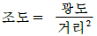
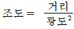
(정답률: 81%)
35. 다음 중 사무실의 오염물질 관리기준에서 이산화탄소의 관리기준으로 옳은 것은?
- 500ppm 이하
- 1000ppm 이하
- 2000ppm 이하
- 3000ppm 이하
(정답률: 81%)
36. 다음 중 관상면을 따라 일어나는 운동으로 인체의 중심선에서 멀어지는 관절 운동을 무엇이라 하는가?
- 굴곡(flexion)
- 신전(extension)
- 외전(abduction)
- 내전(adduction)
(정답률: 72%)
37. 일반적으로 소음계는 3가지 특성에서 음압을 측정할 수 있도록 보정되어 있는데 A 특성치란 40phon의 등음량 곡선과 비슷하게 보정하여 측정한 음압수준을 말한다. B 특성치와 C 특성치는 각각 몇 phon의 등음량곡선과 비슷하게 보정하여 측정한 값을 말하는가?
- B 특성치 : 50phon, C 특성치 : 80phon
- B 특성치 : 60phon, C 특성치 : 100phon
- B 특성치 : 70phon, C 특성치 : 100phon
- B 특성치 : 80phon, C 특성치 : 150phon
(정답률: 74%)
38. 우리 몸의 구조에서 서로 유사한 형태 및 기능을 가진 세포들의 모임을 무엇이라 하는가?
- 기관계
- 조직
- 핵
- 기관
(정답률: 77%)
39. 다음 중 기초대사율(BMR)에 관한 설명으로 틀린 것은?
- 생명유지에 필요한 단위 시간당 에너지량이다.
- 일반적으로 신체가 크고 젊은 남성의 BMR이 크다.
- BMR은 개인차가 심하며 체중, 나이, 성별에 따라 달라진다.
- 성인 BMR은 대량 5kcal/min ~ 10kcal/min정도이다.
(정답률: 65%)
40. 골격근의 구조적 단위 중 하나인 근속을 싸고 있는 결합조직을 무엇이라 하는가?
- 근외막
- 근내막
- 근주막
- 건
(정답률: 46%)
3과목: 산업심리학 및 관계법규
41. 다음 중 인간의 불안전한 행동을 유발하는 외적요인이 아닌 것은?
- 인간관계 요인
- 생리적 요인
- 작업적 요인
- 작업환경적 요인
(정답률: 65%)
42. 다음 중 안전관리의 개요에 관한 설명으로 틀린 것은?
- 안전의 3요소로는 Engineering, Education, Economy를 말한다.
- 안전의 기본원리는 사고방지차원에서의 산업재해 예방활동을 통해 무재해를 추구하는 것이다.
- 사고방지를 위해서 현장에 존재하는 위험을 찾아내어 이를 제거하거나 위험성(risk)을 최소화한다는 위험통제의 개념이 적용되고 있다.
- 안전관리란 생산선 향상과 재해로부터 손실을 최소화하기 위하여 행하는 것으로 재해의 원인 및 경과의 규명과 재해방지에 필요한 과학 기술에 관한 계통적 지식체계의 관리를 말한다.
(정답률: 79%)
43. 다음 중 스트레스에 대한 적극적 대처방안과 가장 거리가 먼 것은?
- 근육이나 정신을 이완시킴으로서 스트레스를 통제 한다.
- 규칙적인 운동을 통하여 근육긴장과 고조된 정신 에너지를 경감시킨다.
- 동료들과 대화를 하거나 노래방에서 가까운 친지들과 함께 자신의 감정을 표출하여 긴장을 방출한다.
- 수치스런 생각, 죄의식, 고통스런 경험들을 의식에서 스스로 제거하거나 의식수준 이하로 끌어 내린다.
(정답률: 66%)
44. 다음 중 가정불화나 개인적 고민으로 인하여 정서적 갈등을 하고 있을 때 나타나는 부주의 현상은?
- 의식의 이완
- 의식의 우회
- 의식의 단절
- 의식의 과잉
(정답률: 71%)
45. 라스무센(Rasmussen)은 인간 행동의 종류 또는 수준에 따라 휴먼 에러를 3가지로 분류하였는데 이에 속하지 않는 것은?
- 숙련기반 에러(Skill-based error)
- 기억기반 에러(Memory-based error)
- 규칙기반 에러(Rule-based error)
- 지식기반 에러(Knowledge-based error)
(정답률: 67%)
46. 다음 중 민주적 리더십의 발휘와 관련된 적절한 이론이나 조직형태는?
- X 이론
- Y 이론
- 관료주의 조직
- 라인형 조직
(정답률: 76%)
47. 재해에 의한 직접 손실이 연간 100억원이었다면 이 해의 산업재해에 의한 총손실비용은 얼마인가? (단, 하인리히의 재해손실비 평가방식을 따른다.)
- 300억원
- 400억원
- 500억원
- 800억원
(정답률: 67%)
48. 다음 중 집단간 갈등의 원인으로 볼 수 없는 것은?
- 제한된 자원
- 집단간 목표의 차이
- 집단간의 인식 차이
- 구성원들 간의 직무 순환
(정답률: 74%)
49. 다음 중 리더가 구성원에 영향력을 행사하기 위한 9가지 영향 방략과 가장 거리가 먼 것은?
- 지문
- 무시
- 제휴
- 합리적 설득
(정답률: 80%)
50. 작업자 한 사람의 성능 신뢰도가 0.95일 때, 요원 중복을 하여 2인 1조로 작업을 할 경우 이 조의 인간 신뢰도는 얼마인가? (단, 작업 중에는 항상 요원지원이 되며, 두 작업자의 신뢰도는 동일하다고 가정한다.)
- 0.9025
- 0.95
- 1.0
- 0.9975
(정답률: 66%)
51. 다음 중 Lewin의 인간행동에 대한 설명으로 옳은 것은?
- 인간의 행동은 개인적 특성(P0과 환경(E)의 상호 함수관계이다.
- 인간의 욕구(needs)는 1차적 욕구와 2차적 욕구로 구분된다.
- 동작시간은 동작의 거리와 종류에 따라 다르게 나타난다.
- 집단행동은 통제적 집단행동과 비통제적 집단행동으로 구분할 수 있다.
(정답률: 77%)
52. 다음 중 NIOSH의 직무 스트레스 관리 모형에 관한 설명으로 틀린 것은?
- 직무 스트레스 요인에는 크게 작업 요인, 조직 요인 및 환경 요인으로 구분된다.
- 조직 요인에 의한 직무 스트레스에는 역할 모호성, 역할 갈등, 의사 결정에의 참여도, 승진 및 직무의 불안정성 등이 있다.
- 똑같은 작업환경에 노출된 개인들이라도 지각하고 그 상황에 반응하는 방식에서 차이를 가져오는데, 이와 같이 개인적이고 상황적인 특성을 완충요인이라고 한다.
- 작업 요인에 의한 직무 스트레스에는 작업부하, 작업속도 및 작업과정에 대한 작업자의 통제정도, 교대근무 등이 포함된다.
(정답률: 59%)
53. 다음 중 휴먼에러의 배후요인 4가지(4M)에 속하지 않는 것은?
- Man
- Machine
- Motive
- Management
(정답률: 82%)
54. 다음 [표]는 동기부여와 관련된 이론의 상호 관련성을 서로 비교해 놓은 것이다. 빈 칸의 ① ~ ⑤에 해당하는 내용을 올바르게 연결한 것은?
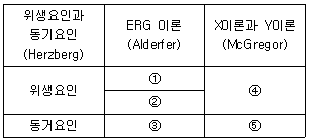
- ① : 존재욕구, ② : 관계욕구, ④ : X 이론
- ① : 관계욕구, ③ : 성장욕구, ④ : Y 이론
- ① : 존재욕구, ③ : 관계욕구, ⑤ : Y 이론
- ② : 성장욕구, ③ : 존재욕구, ⑤ : X 이론
(정답률: 68%)
55. 다음 중 인간오류확률의 추정기법으로 가장 적절한 것은?
- PHA
- FHA
- FMEA
- OAT
(정답률: 38%)
56. 다음 중 하인리히가 제시한 사고예방대책의 기본원리 5단계에 해당되지 않는 것은?
- 사실의 발견
- 시정방법의 선정
- 시정책의 적용
- 재해보상 및 관리
(정답률: 80%)
57. 다음 중 피로의 측정대상 항목에 있어 플리커, 반응시간, 안구운동, 뇌파 등을 측정하는 검사방법은?
- 정신 . 신경기능검사
- 순환기능검사
- 자율신경검사
- 운동기능검사
(정답률: 48%)
58. 다음 중 산업안전보건법상 근로자가 근골격계부담 작업을 하는 경우 사업주가 근로자에게 알려주어야 하는 사항에 해당하지 않는 것은?
- 근골격계부담작업의 유해요인
- 근골격계질환의 징후와 증상
- 근골격계질환 발생 시의 대처요령
- 근골격계질환 예방관리 프로그램
(정답률: 67%)
59. 리더십의 이론 중 경로-목표 이론에 있어 리더들이 보여주어야 하는 4가지 행동유형에 속하지 않는 것은?
- 지시적
- 권위적
- 참여적
- 성취지향적
(정답률: 41%)
60. 다음 중 반응시간에 관한 설명으로 옳은 것은?
- 자극이 요구하는 반응을 행하는데 걸리는 시간을 말한다.
- 반응해야 할 신호가 발생한 때부터 반응이 종료될 때까지의 시간을 말한다.
- 단순반응시간에 영향을 미치는 변수로는 자극 양식, 자극의 특성, 자극 위치, 연령 등이 있다.
- 여러 개의 자극을 제시하고, 각각에 대한 서로 다른 반응을 과제를 준 후에 자극이 제시되어 반응할 때까지의 시간을 단순반응시간이라 한다.
(정답률: 42%)
4과목: 근골격계질환 예방을 위한 작업관리
61. 다음 중 공정도에 사용되는 기호와 그 내용이 잘못 연결된 것은?
- : 가공
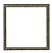
: 검사- : 저장
- : 정체
(정답률: 64%)
62. 다음 중 근골격계 질환의 유형에 대한 설명으로 틀린 것은?
- 수근관 증후군은 손목이 꺾인 상태나 과도한 힘을 준 상태에서 반복적 손 운동을 할 때 발생한다.
- 결절종은 반복, 구부림, 진동 등에 의하여 건의 섬유질이 손상되거나 찢어지는 등의 건에 염증이 생기는 질환이다.
- 외상 과염은 팔꿈치 부위의 인대에 염증이 생김으로써 발생하는 증상이다.
- 백색수지증은 손가락에 혈액의 원활한 공급이 이루어지지 않을 경우에 발생하는 증상이다.
(정답률: 67%)
63. 다음 중 유해요인의 공학적 개선사례로 볼 수 없는 것은?
- 중량물 작업 개선을 위하여 호이스트를 도입하였다.
- 작업피로감소를 위하여 바닥을 부드러운 재질로 교체하였다.
- 작업량 조정을 위하여 컨베이어의 속도를 재설정 하였다.
- 로봇을 도입하여 수작업을 자동화하였다.
(정답률: 78%)
64. 다음 중 근골격계질환 예방관리 프로그램의 주요구성 요소로 볼 수 없는 것은?
- 보상절차 심의
- 예방 . 관리 정책 수립
- 교육/훈련 실시
- 유해요인 조사 및 관리
(정답률: 83%)
65. 다음 중 [보기]와 같은 작업표준의 작성 절차를 올바르게 나열한 것은?
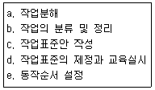
- a → b → c → e → d
- a → e → b → c → d
- b → a → e → c → d
- b → a → c → e → d
(정답률: 64%)
66. 다음 중 동작경제의 법칙에 대한 설명으로 틀린 것은?
- 동작 거리는 가능한 최소로 한다.
- 양손 동작은 가능한 동시에 하도록 한다.
- 급격한 동작의 방향 전환이 되도록 한다.
- 눈의 초점을 모아야 작업할 수 있는 경우는 가능하면 없앤다.
(정답률: 81%)
67. 다음 중 수공구의 설계원리로 적절하지 않은 것은?
- 손목 대신 손잡이를 굽히도록 한다.
- 지속적인 정적 근육부하를 피하도록 한다.
- 특정 손가락의 반복적인 동작을 피하도록 한다.
- 손잡이 표면의 홈은 되도록 깊게 하고, 그 수는 가능한 많이 제작한다.
(정답률: 81%)
68. 관측평시간이 30DM 이고, 제1평가에 의한 속도평가 계수는 130%이며, 제2평가에 의한 2차 조정계수가 20%일 때 객관적 평가법에 의한 정미시간은 몇 초인가?(오류 신고가 접수된 문제입니다. 반드시 정답과 해설을 확인하시기 바랍니다.)
- 23.40초
- 28.08초
- 32.76초
- 46.80초
(정답률: 29%)
69. 다음 중 근골격계질환 예방을 위한 관리적 개선사항에 해당되지 않는 것은?
- 작업속도 조절
- 작업의 다양성 제공
- 인양 시 보조기구사용
- 도구 및 설비의 유지관리
(정답률: 57%)
70. 다음 중 5 TMU(Time Measurement Unit)를 초 단위로 환산하면 몇 초인가?
- 0.00036초
- 0.036초
- 0.18초
- 1.8초
(정답률: 72%)
71. 다음 중 다중활동도표 작성의 주된 목적으로 가장 적절한 것은?
- 작업자나 기계의 유휴 시간 단축
- 설비의 유지 및 보수 작업 분석
- 기자재의 소통상 혼잡지역 파악 및 시설 재배치
- 제조 과정의 순서와 자재의 구입 및 조립 여부 파악
(정답률: 46%)
72. 요소작업을 측정하기 위해 표본의 표준편차는 0.6이고 신뢰도계수는 2인 경우 추정의 오차범위 ±5%를 만족시키는 관측회수는 얼마인가?
- 476번
- 576번
- 676번
- 776번
(정답률: 59%)
73. 다음 중 작업연구에 대한 설명으로 적합하지 않은 것은?
- 작업연구는 보통 동작연구와 시간연구로 구성된다.
- 시간연구는 표준화된 작업방법에 의하여 작업을 수행할 경우에 소요되는 표준시간을 측정하는 분야이다.
- 동작연구는 경제적인 작업방법을 검토하여 표준화 된 작업방법을 개발하는 분야이다.
- 동작연구는 작업측정으로, 시간연구는 방법연구라고도 한다.
(정답률: 45%)
74. 다음 중 워크샘플링법의 장점으로 볼 수 없는 것은?
- 특별한 시간 측정 설비가 필요하지 않다.
- 짧은 주기나 반복적인 작업의 경우에 적합하다.
- 관측이 순간적으로 이루어져 작업에 방해가 적다.
- 조사기간을 길게 하여 평상시의 작업현황을 그대로 반영시킬 수 있다.
(정답률: 68%)
75. 다음 중 SEARCH 원칙에 대한 내용으로 틀린 것은?
- Rearrange : 작업의 재배열
- How often : 얼마나 자주?
- Alter sequence : 순서의 변경
- Simplify operations : 작업의 단순화
(정답률: 56%)
76. 다음 중 영상표시단말기(VDT) 취급에 관한 설명으로 틀린 것은?
- 키보드와 키 윗부분의 표면은 광택으로 할 것
- 화면을 바라보는 시간이 많은 작업일수록 밝기와 작업대 주변 밝기의 차를 줄이도록 할 것
- 빛이 작업화면에 도달하는 각도는 화면으로부터 45° 이내일 것
- 작업자의 손목을 지지해 줄 수 있도록 작업대 끝면과 키보드의 사이는 15cm이상을 확보할 것
(정답률: 72%)
77. 다음 중 스패너를 사용하여 볼트를 조이는 내용의 서블릭(Therblig)기호로 가장 적절한 것은?
- TE
- U
- SH
- G
(정답률: 45%)
78. 다음 중 근골격계부담작업에 해당되지 않는 것은?
- 하루에 12회, 25kg의 물건을 드는 작업
- 하루에 4시간 제자리에 서서 이루어지는 작업
- 하루에 총 4시간 무릎을 굽힌 자세에서 이루어지는 작업
- 하루에 총 3시간 목, 어깨, 팔꿈치를 사용하여 같은 동작을 반복하는 작업
(정답률: 57%)
79. 다음 중 NIOSH의 들기작업 지침에 관한 설명으로 틀린 것은?
- 무게 23kg은 최악의 환경에서 들기 작업을 할 때의 최소 허용 무게이다.
- 들기지수는 실제 작업물의 무게와 권장무게한계의 비(ratio)이다.
- 권장무게한계에는 신체의 비틀림 정도와 손잡이의 상태가 반영된다.
- 지침을 이용한 들기작업의 분석은 단순 들기작업과 복합 들기작업으로 구분하여 분석한다.
(정답률: 37%)
80. 다음 중 파레토 차트에 관한 설명으로 틀린 것은?
- 재고관리에서는 ABC 곡선으로 부르기도 한다.
- 20% 정도에 해당하는 중요한 항목을 찾아낸 것이 목적이다.
- 불량이나 사고의 원인이 되는 중요한 항목을 찾아 관리하기 위함이다.
- 작성 방법은 빈도수가 낮은 항목부터 큰 항목 순으로 차례대로 나열하고, 항목별 점유비율과 누적비율을 구한다.
(정답률: 73%)